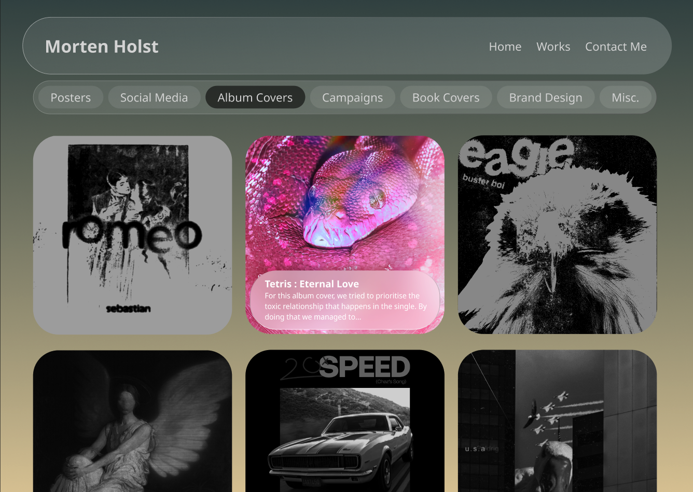

Portfolio Koncept i Figma
Som en del af vores selvstudiedag d. 5 September 2024, skulle vi lave en portfolio styled hjemmeside inde i FIGMA. Målet med opgaven var at vi skulle lære at bruge noget visuelt hieraki og lave 3 forskellige versioner af forsiden på vores portfolio. Jeg valgte at gå igang med opgaven, ved at inkludere ting som jeg tidl. har lavet inde i Adobe Photoshop, og lege samtidigt lidt med noget 'Glassmorphism'.
Version 1.0
I min første version, fik jeg skabt et projekt fokuseret design. Min generalle ide var at det skulle være et slider hvor man kunne køre igennem projekterne. Kriterierne var at der var maks 5 projekter ad gangen, og det nyeste projekt var først. Når et projekt blev nummer 5 i slideren, røg det ud af rotation. Dog gik jeg hurtigt væk fra den ide, da den nok primært ville inkludere de 5 nyeste projekter lagt op på hjemmesiden, og det ville være svært at finde frem til særligt meget mere. Ideen kunne have udviklet sig bedre hvis der var en mulighed for at man kunne scroll ned og se mere og/eller se kategorier og browse i dem. Det var også her hvor jeg fik primært sat igang på min navigationsbar, som fik denne glassmorphism baggrund.
For mig var denne glassmorphism en del som designet der gav mindre fokus på selveste navigationen af hjemmesiden og mere på hvilke projekter der var på hjemmesiden. Dette var en del jeg valgte at beholde igennem de 2 andre versioner af forsiden, da jeg synes det gav en alternativ og unik navigationsbar - som senere også bliver brugt andre steder i de andre versioner.
Version 2.0
 I version 2 bliver forsiden til en slags work-page.